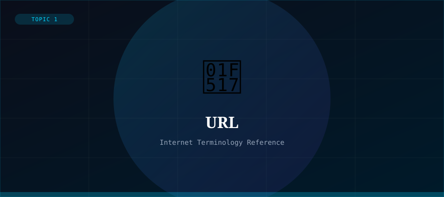

What is a URL?
A Uniform Resource Locator (URL) is the address used to access resources on the Internet. Every web page, image, video, or file on the Web has a unique URL that tells your browser exactly where to find it. URLs are a subset of URIs (Uniform Resource Identifiers).
URLs were invented by Tim Berners-Lee in 1994 as part of the original Web specification. They provide a consistent, human-readable way to locate any resource on the Web.
Anatomy of a URL
A URL is made up of several distinct parts. Consider the example: https://www.example.com:443/page?search=hello#section
- Scheme: https:// — specifies the protocol (HTTP, HTTPS, FTP, etc.)
- Subdomain: www — often indicates the main website
- Domain: example.com — the registered name of the website
- Port: :443 — the network port (often omitted when standard)
- Path: /page — the specific resource on the server
- Query String: ?search=hello — additional parameters
- Fragment: #section — a specific anchor within the page
HTTP vs HTTPS
URLs beginning with https:// use SSL/TLS encryption to secure the connection between your browser and the server. This prevents eavesdropping and tampering. Modern browsers flag http:// sites as 'Not Secure' and it is standard practice to use HTTPS for all websites.